ТЕМА 6. Основи алгебри логіки
1. Логічні основи проектування цифрових пристроїв.
2. Основи алгебри логіки.
3. Основні закони алгебри логіки.
4. Способи задавання функцій алгебри логіки.
5. Повна система логічних функцій. Поняття про базис.
6. Основні етапи синтезу комбінаційних пристроїв.
1. Логічні основи проектування цифрових пристроїв
Завдання, що вирішуються при розробці цифрових логічних пристроїв, можна розділити на дві категорії:
1. Синтез.
2. Аналіз.
Синтез - це процес побудови схеми цифрового пристрою за завданням.
Аналіз - процес зворотний синтезу.
Модель дискретного пристрою, що відображає його властивості по переробці сигналів, називається дискретним (цифровим) автоматом.
У загальному випадку, моделлю є багатополюсний чорний ящик з m входами і n виходами (рис.1).
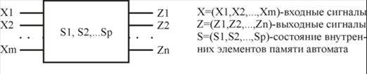
Рис.1. Схема представлення цифрового автомата в вигляді багатополюсника
Стан автомата визначається значенням сигналів на його входах і виходах. Сукупність вхідних і вихідних змінних Х і Z утворюють вхідне і вихідне слово автомата, відповідно.
Кожне слово - набір змінних на вході або на виході автомата, відрізняється від іншого слова однією буквою. Кожна буква слова поставлена у відповідність номером входу (виходу) автомата.
2. Основи алгебри логіки
Алгебра логіки (АЛ) є основним інструментом синтезу і аналізу дискретних автоматів всіх рівнів. АЛ називають також Булевою алгеброю. АЛ базується на трьох функціях, що визначають три основні логічні операції.
1. Функція заперечення (НЕ). f1 = читається, як f1 є (еквівалентна) НЕ Х. Елемент, що реалізовує функцію НЕ, називається елементом НЕ (інвертором).
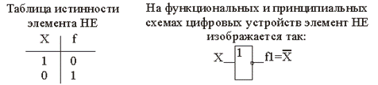
2. Функція логічного множення (кон'юнкції). Функція логічного множення записується у вигляді f2=X1·X2. Символи логічного множення &, L <х >. Функція кон'юнкції читається так: f2 є (еквівалентна) Х1 і Х2, оскільки функція істинна тоді, коли істинні 1-й і 2-й аргументи (змінні). Кон'юнкцію називають функцією І, елемент, що реалізовує цю функцію, елементом І.
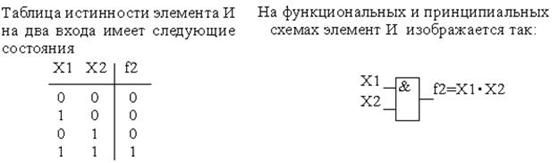
3. Логічне складання (диз'юнкція). Функція логічного складання записується у вигляді f3=X1 + X2, і читається так: f3 є Х1 або Х2, оскільки функція істинна, коли істинна одна або інша змінна. Тому функцію диз'юнкції часто називають функцією АБО. Символи логічного складання +,V.
У загальному випадку функція АБО записується:
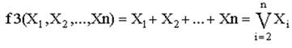
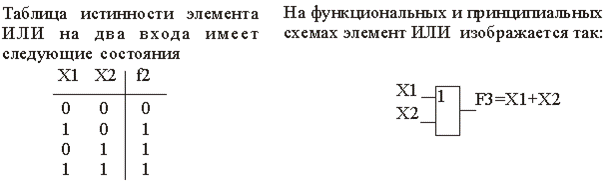
Використовуючи операції (функції) І, АБО, НЕ можна описати поведінку будь-якого комбінаційного пристрою, задавши скільки завгодно складний булевий вираз.Усякий булевий вираз складається з булевих констант і змінних, зв'язаних операціями І, АБО, НЕ.
Приклад булевого виразу:
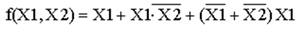
3. Основні закони алгебри логіки
Основні закони АЛ дозволяють проводити еквівалентні перетворення функцій, записаних за допомогою операцій І, АБО, НЕ, приводити їх до виду зручного для подальшого використання і спрощувати запис.
ЗАКОНИ АЛГЕБРИ ЛОГІКИ
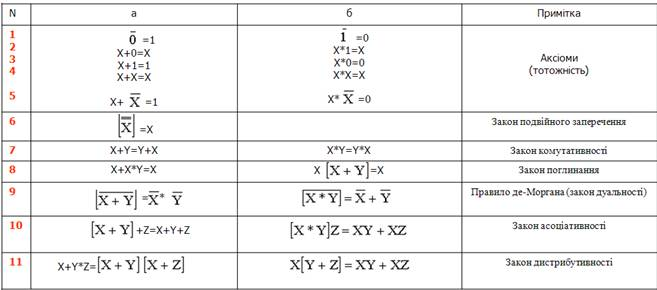
Як випливає з таблиці булевій алгебрі притаманний принцип подвійності лише закон подвійного заперечення не підкоряється цьому принципу. Використовуючи закони алгебри логіки, можна спростити булеві вирази, зокрема, правило склеювання дозволяє спростити вираз типу
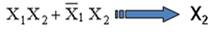
4. Способи задавання функцій алгебри логіки
При зіставленні функцій АЛ із дискретними автоматами аргументи функцій, зіставляються із входами, а самі функції з виходами дискретного автомата. Оскільки дискретний автомат має кінцеве число входів, то ми матимемо справу з функцією кінцевого числа аргументів. Якщо автомат має m входів, то кількість вхідних змінних m і число можливих комбінацій наборів значень цих вхідних аргументів (змінних) К=2m.
Оскільки автомат має кінцеве число входів, його стан описується кінцевим числом значень функцій виходів. Існує декілька способів задавання функцій АЛ і дискретного автомата.
1. Табличний спосіб. При цьому способі функція задається у вигляді таблиці істинності, що є сукупністю всіх наборів змінних і відповідних ним значень функції.
Таблиця істинності містить 2m рядків, m стовпців (по кількості входів) і один стовпець для запису значення функції.
Наприклад: потрібно задати функцію трьох змінних F1(Х1,Х2,Х3), тобто автомат на три входи і на один вихід, отже, m=3, К=8.
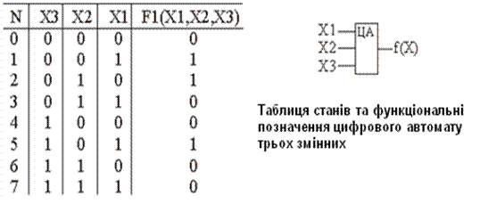
Наступний спосіб дискретного автомата – числовий. В цьому випадку функція задається у вигляді десяткових еквівалентів номерів наборів аргументів, при яких функція приймає одиничне значення. Наприклад, для розглянутого вище прикладу функція F1 приймає одиничні значення на наборах змінних за наступними номерами: 1, 2, 5, тоді числовий спосіб матиме вигляд
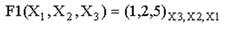
Аналітичний спосіб функції алгебри логіки. При цьому способі функція задається у вигляді аналітичного виразу, отриманого шляхом застосування яких-небудь логічних операцій.
Наприклад:
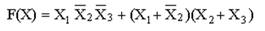
Координатний спосіб. При цьому способі дискретний автомат задається за допомогою карти його стану, яка відома як карта Карно. Карта Карно містить 2m кліток по числу наборів значень змінних. Кожна клітка визначається координатами рядків і стовпців, відповідними певному набору змінних. Всі вхідні змінні розбиваються на 2 групи так, що одна група визначає координати рядків, а інша - координати стовпців. У кожній клітці карти Карно проставляється відповідне значення функції на заданому наборі. Числовий вираз цій функції виглядає так:
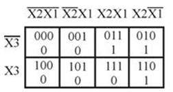
Приклад побудови карти Карно для функції 4-х змінних
Нехай функція задана в числовій формі і має вид:
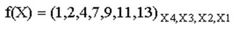
отже, К=16, m=4.
Спочатку проводимо розмітку координат карти Карно без вказівки значень функції. Для зручності скористаємося вказівкою ”шапки” у вигляді прямих ліній, ”під” якими змінні входять в значення координат без заперечення. Таким чином, по стовпцях і по рядках змінні входять без заперечення в межах лінії-шапки.
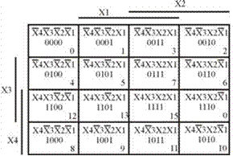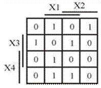
| Карта Карно для функції чотирьох змінних |
Карта Карно функції чотирьох змінних з вказуванням зовнішніх розміток |
Для наглядності координати кліток карти Карно вказані в трьох формах: у вигляді наборів змінних; у вигляді двійкового числа, відповідного порядковому номеру набору змінних; у десятковому еквіваленті номерів наборів змінних. На практиці координати кліток не записують, в клітках вказують одиничні значення функції, відповідні “координатним” наборам змінних. Нульові значення функції в клітки можна не записувати, тобто клітки, координати яких визначаються наборами змінних з нульовими значеннями функції, можна залишити пустими. Слід зазначити, що перестановка місцями змінних Х1 і Х2, а так само змінних Х3 і Х4 допускається, допускається також перестановка місцями змінних Х1Х2 і Х4Х3. При побудові карти Карно, тобто при задаванні логічній функції, вказують лише зовнішні елементи розмітки координат.
5. Повна система логічних функцій. Поняття про базис
Функціонально повна система логічних функцій є набором логічних функцій, за допомогою яких можна записати будь-яку, скільки завгодно складну функцію. В цьому випадку говорять, що цей набір утворює базис. Функціонально повними є 3 базиси:
1) ”І-АБО-НЕ” (базис кон'юнкції, диз'юнкції, інверсії)
2) ”І-НЕ” (базис Шеффера)
3) ”АБО-НЕ” (базис Пірсу або функція Вебба).
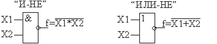
Реалізація операції ”НЕ”.
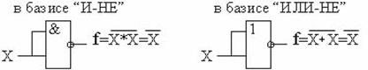
Реалізація операції ”І”.
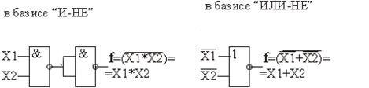
Реалізація операції ”АБО” .
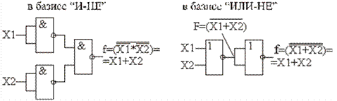
Приклад синтезу електронної схеми
Нехай задана функція, що реалізовується комбінаційним пристроєм, в аналітичній формі
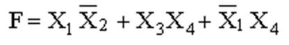
Використовуючи закон де-Моргана і з урахуванням закону подвійного інвертування, запишемо цю функцію у вигляді
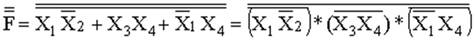
Як випливає з отриманого аналітичного виразу, логічний пристрій повинен містити три двовходових і один тривходовий елементи І-НЕ.
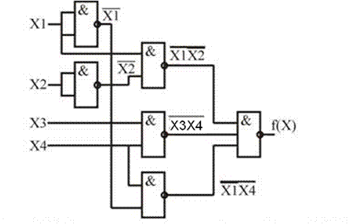
Схема логічного пристрою в базисі ”І-НЕ”
6. Основні етапи синтезу комбінаційних пристроїв
У завдання синтезу комбінаційних пристроїв входить побудова схеми пристрою за заданими умовами його роботи і при заданому базисі елементів. Завдання комбінаційного пристрою зводиться до тих функцій, які воно повинне реалізувати. Число функцій визначається числом виходів комбінаційного пристрою.
Процес синтезу комбінаційних пристроїв складається з 2-х етапів.
1. Абстрактний синтез
Абстрактний синтез включає:
– формування завдання, словесний опис функцій пристрою, визначення типу пристрою;
– опис пристрою на формалізованих мовах: таблиця істинності, карта Карно, аналітичний вираз і т.д.;
– мінімізація булевих функцій;
– побудова логічної схеми пристрою.
2. Схемний синтез
– перехід в необхідний базис;
– побудова принципової схеми;
– розробка монтажної схеми;
– виготовлення пристрою його випробування.
В результаті випробувань здійснюється коректування схеми і підготовка технічної документації.